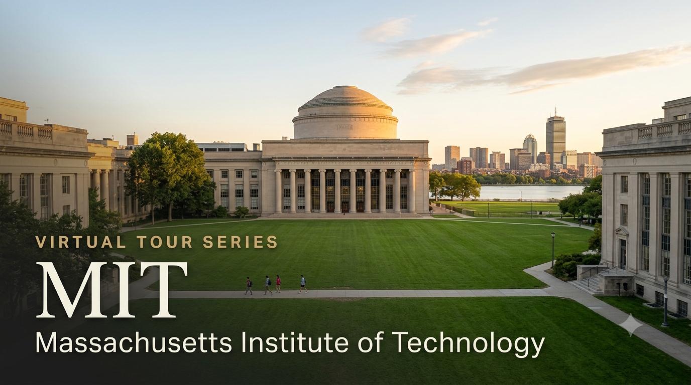

University Spotlight: MIT — Virtual Tour Guide

I'm delighted to share the second edition of the University Virtual Tour Series — a curated resource to help your child explore some of the world's leading universities from the comfort of home. Students from both the CBSE and Cambridge programmes will find this resource relevant — MIT accepts both qualifications.
I strongly recommend that parents of Grade 9 and above students make the time to visit at least one university — MIT, a local university in India, or any institution of your choice. A physical visit gives your child something no virtual tour can replicate: they will see the infrastructure and facilities with their own eyes, observe how professors engage with students in live classrooms, and most importantly, spend time talking to existing students about their day-to-day experience. These conversations almost always leave a lasting impression and help students make more grounded, confident decisions about their future. If you'd like guidance planning a visit, feel free to get in touch.
MIT Admission Requirements — CBSE and Cambridge A Level
The table below summarises what MIT officially requires for students applying through each pathway. For subject-specific strategies and application planning, feel free to reach out for a one-on-one session.
| Requirement | CBSE Grade 12 | Cambridge A Level |
|---|---|---|
| Qualification | Indian Standard 12 — CBSE Board | Cambridge International AS & A Level (Cambridge, Edexcel, AQA, OCR accepted) |
| Minimum to Apply | Strong academic record; no published minimum — evaluated holistically in context | Strong academic record; typically 3+ A Level subjects in relevant disciplines |
| Competitive Benchmark | 90%+ in core subjects; holistic profile — grades are a baseline, not a guarantee | AAA recommended in core subjects; holistic profile equally important |
| SAT / ACT | REQUIRED — Middle 50% range: SAT 1510–1570; ACT 34–36. MIT superscores SAT | REQUIRED — Same requirement for all applicants regardless of qualification |
| English Proficiency | Recommended if English used fewer than 5 years; CBSE English-medium students generally waived | Cambridge A Level in English medium — generally waived |
| Essays | 5 short-answer essays (~100–200 words each) — MIT's own format. Not the Common Application | Same requirement |
| Teacher Recommendations | 2 required: one from a Maths/Science teacher; one from Humanities/Language teacher | Same requirement |
| JEE / Olympiads | JEE not required; Olympiad medals (IMO, IPhO, IChO, IBO) are highly valued | Not applicable |
| Application Portal | MIT's own portal: apply.mitadmissions.org — NOT Common App or Coalition App | Same — all applicants use the MIT portal |
| Early Action (EA) | Deadline: November 1 | Decision: mid-December | Non-binding — no commitment to attend | Same |
| Regular Action (RA) | Deadline: January 5 | Decision: mid-March | Cannot apply EA and RA in the same year | Same |
| Financial Aid | Need-blind — financial status not considered in admissions; apply via CSS Profile | Same — all admitted students eligible for need-based aid |
MIT uses its own application portal at apply.mitadmissions.org — not the Common App. Applicants can only apply once per entry year (EA and RA cannot be combined). Early Action is non-binding — you are not committed to attend if admitted, but applying EA provides a decision in mid-December, allowing more time for visa, finances, and travel planning. Financial aid applications are submitted via the CSS Profile; MIT does not factor financial need into its admissions decision.
Voices from MIT — Indian Students
"Knowledge is universal, brings joy, opens doors to new opportunities, and has the power to enlighten and bring people of diverse backgrounds closer together in pursuit of a better world."
— Siddhartha Jayanti, India, PhD Candidate, MIT Computer Science and Artificial Intelligence Laboratory (CSAIL)
"There are cultural programs at MIT that help students feel at home away from home."
— Ranu Boppana '87, India, MIT Alumna | President, MIT South Asian Alumni Association (MITSAAA)
Why Should Your Child Consider MIT?
1. QS #1 Globally for 15 Consecutive Years — An Unmatched Track Record
MIT has been ranked the world's best university in the QS World University Rankings for 15 consecutive years — a record no other institution holds. The QS 2027 edition, released on 18 June 2026, awarded MIT a perfect score of 100. A degree from MIT is the single most recognised academic credential in STEM globally, valued by employers, research institutions, and graduate schools in every country including India, the US, Europe, and Southeast Asia.
2. Location — Cambridge, Massachusetts: The World's Innovation Capital
MIT sits in Cambridge, Massachusetts — steps from Harvard and at the heart of one of the world's most powerful innovation ecosystems. Boston and Cambridge together host over 6,000 technology and life science companies, offering MIT students unparalleled access to internships, research roles, and industry connections. The broader New England region also has a rich Indian-origin community with cultural organisations, Indian restaurants, and social networks that make the transition from home meaningful and manageable, despite the longer flight distance of 18–20 hours from Chennai.
3. Rigorous, Interdisciplinary Education — Built for Future Problem-Solvers
MIT is not just for engineers. While its STEM programmes in Computer Science, Electrical Engineering, Physics, and Mechanical Engineering are the best in the world, MIT's curriculum is deeply interdisciplinary. Students can combine Engineering with Economics, Architecture with Urban Planning, or Computer Science with Biology. All MIT undergraduates complete a Communication Requirement — ensuring that every graduate can think analytically and write clearly. Students are also encouraged to explore research from their very first year, with access to labs, faculty, and real-world projects that most universities reserve for postgraduates.
4. Need-Blind Admissions + 100% Financial Aid — One of Only 5 Universities Worldwide
MIT is one of only five universities in the world that is simultaneously need-blind, need-based, and full-need for ALL students — domestic and international alike. Need-blind means MIT does not consider your family's financial situation during the admissions process. Full-need means that every admitted student who applies for aid receives 100% of their demonstrated financial need — covered through grants and scholarships, not loans. Families with annual income below USD 100,000 have zero parent contribution; those with income below USD 200,000 typically attend MIT tuition-free from AY2025–2026. The full annual cost of an MIT education is USD 92,760 (~INR 88 lakhs), but the median amount actually paid by aid recipients in 2024–2025 was just USD 10,268 (~INR 9.8 lakhs). 88% of MIT students graduate debt-free.
What Parents Should Know
- MIT's acceptance rate is approximately 4–5% — among the most selective institutions in the world; a strong academic profile is a baseline, not a guarantee — the essays, recommendations, and activities carry equal weight
- Financial need is NEVER considered during MIT's admissions decision — only your child's profile matters for selection; aid is calculated separately after admission
- The full annual cost is USD 92,760 (~INR 88 lakhs) but most Indian families with demonstrated need pay a fraction of this; families with income under USD 100,000 pay nothing; those under USD 200,000 typically attend tuition-free
- MIT has a vibrant South Asian student community — Sangam (the Association of Indian Students at MIT, founded 1962), MIT Nritya (classical dance), Diwali celebrations, and Indian cuisine widely available on campus
- F-1 student visa is required; MIT provides an I-20 form upon admission. Important (effective June 2025): All F-1 student visa applicants must set all social media profiles to PUBLIC before their visa interview. Apply for your F-1 visa at least 5–6 months before your programme start date
To discuss SAT preparation timelines, MIT application strategy, scholarship eligibility, and subject pathway planning for your child, feel free to write to me at pcmadankumar@gmail.com or get in touch via the contact page. I'm happy to set up a one-on-one session at a time convenient for you.
I curate University Virtual Tour resources as part of my commitment to helping students and parents make informed post-secondary decisions. Future editions will continue to spotlight leading universities across major study destinations worldwide, including the UK, USA, Australia, Canada, India, and Singapore.
Best wishes,
Madan Kumar PC
References
- QS World University Rankings 2027 — MIT #1 globally for the 15th consecutive year; perfect score of 100 (released 18 June 2026). news.mit.edu
- MIT Admissions — Tests & Scores. mitadmissions.org
- MIT Admissions — Deadlines & Requirements. mitadmissions.org
- MIT — Making MIT Affordable (Official). sfs.mit.edu
- MIT Student Financial Services — International Students. sfs.mit.edu
- MIT Course Catalog — Financial Aid. catalog.mit.edu
- MIT Campus Virtual Tour — YouTube. youtube.com